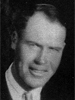

Alma and Mattie Helquist Sorensen Family Group
Home
Histories
Charts
Photos
Maps
Restricted
News
Info
Contact
 symbol is a link to a history,
symbol is a link to a history,  a source, and the chart
a source, and the chart  symbol is a link to a family group chart.)
symbol is a link to a family group chart.)|
Hans Sorensen and Mathilda Torgersen Evensen |
----> |  |
Alma Sorensen Born 31 Mar 1891 Bunkerville, Lincoln, Nevada, USA Died 12 May 1977 Richfield, Sevier, UT Mattie Amelia Helquist Born 2 Apr 1896 Koosharem, Sevier, UT Died 1 Dec 1984 Richfield, Sevier, UT Married 13 Dec 1916 Manti, Sanpete, UT | |
|
and |
 |
Alma Garth Sorensen Born 8 Apr 1918 Salina, Sevier, UT Died 4 Sep 1996 Woodland Hills, Los Angeles, California Married Cecily Fink 3 June 1920 The 1st child of Alma Sorensen and Mattie Amelia Helquist |
| * |
Voyle B. Sorensen Born 15 Mar 1920 Aurora, Sevier, UT Died 19 Oct 1985 Aurora, Sevier, UT The 2nd child of Alma Sorensen and Mattie Amelia Helquist |
|
Anna Doris Sorensen Born 27 Feb 1923 Aurora, Sevier, UT Died 3 Aug 1959 Aurora, Sevier, UT Married Iles Fairfax Shupe 19 Jul 1958 The 3rd child of Alma Sorensen and Mattie Amelia Helquist |
| * |
Morris Sorensen Born 15 Feb 1925 Aurora, Sevier, UT Died 17 Dec 1958 Manti, Sanpete, UT The 4th child of Alma Sorensen and Mattie Amelia Helquist |
| * |
Phyllis Louise Sorensen Born 15 Jul 1928, Died 15 Jun 1933 Aurora, Sevier, UT The 5th child of Alma Sorensen and Mattie Amelia Helquist |
| * |
Ronald Kent Sorensen Born 5 Nov 1931 Aurora, Sevier, UT Died 9 Apr 1932 Aurora, Sevier, UT The 6th child of Alma Sorensen and Mattie Amelia Helquist |
| David Eugene Sorensen (Verla Anderson) | |
| Vera Carolyn Sorensen (Conrad Hinckley Burgoyne) |